Billonaires In The World
1.Bill Gates
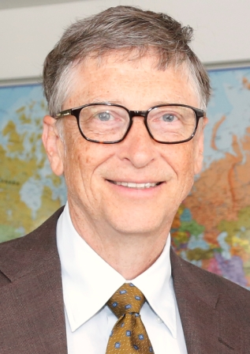
- Net Worth: $86 Billion
- Age: 61
- Source: Microsoft
- With his wife Melinda, Bill Gates chairs the Bill and Melinda Gates Foundation, the world's largest private charitable foundation.
- The foundation works to save lives and improve global health, and is working with Rotary International to eliminate polio.
- Gates has topped Forbes list of the world's billionaires for 18 out of the past 23 years.
- He remains a board member of Microsoft, the software firm he founded with Paul Allen in 1975.
- In late 2016, Gates announced the launch of a $1 billion Breakthrough Energy investment fund with about 20 other people.
2.Warren Buffett
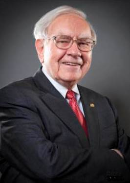
- Net Worth: $75.6 Billion
- Age: 86
- Source: Berkshire Hathaway
- Known as the "Oracle of Omaha," Buffett is one of the most successful investors of all time.
- His Berkshire Hathaway owns more than 60 companies, including Geico, Duracell and Dairy Queen.
- The son of a U.S. congressman, he first bought stock at age 11 and first filed taxes at age 13.
- He has committed to giving more than 99% of his fortune to charity. So far he has given nearly $32 billion.
- With friend Bill Gates, he launched The Giving Pledge, asking billionaires to donate their wealth.
3.Jeff Bezos
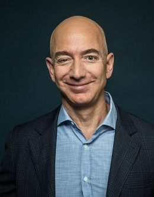
- Net Worth: $72.8 Billion
- Age: 53
- Source: Amazon.com
- Amazon's chief Jeff Bezos has soared to nearly the top of Forbes' billionaires ranks as his online retailer's stock has climbed, in part due to its booming cloud-computing unit, Amazon Web Services.
- He owns nearly 17% of Amazon. com. Bezos boasted at the 2016 shareholders meeting that Amazon is the fastest company ever to reach $100 billion in annual sales, which it cleared in 2015.
- Raised by his mom and stepdad, a Cuban immigrant who adopted him, he quit a lucrative New York hedge fund job in 1994 with the simple idea to sell books online.
- Now Amazon sells nearly everything a consumer might want.
- His other passion is space travel: His aerospace company, Blue Origin, is developing a reusable rocket that Bezos says will carry passengers.
- Bezos purchased The Washington Post in 2013 for $250 million.
4.Amancio Ortega
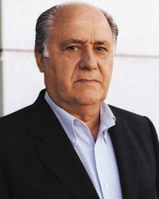
- Net Worth: $71.3 Billion
- Age: 81
- Source: Zara
- Ortega is the richest man in Europe and the wealthiest retailer in the world.
- A pioneer in fast fashion, he cofounded Zara parent Inditex with his ex-wife Rosalia Mera (d. 2013) in 1975.
- Ortega typically earns more than $400 million in dividends a year.
- He has invested in an ever-expanding real estate portfolio, which includes buildings in Madrid, Barcelona, London, Chicago, Miami and New York.
5.Mark Zuckerberg
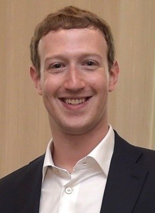
- Net Worth: $56 Billion
- Age: 33
- Source: Facebook
- The Facebook CEO has seen his net worth soar as the social network's stock price has skyrocketed.
- A Harvard dropout, he founded Facebook in 2004 at the age of 19.
- Zuckerberg and his wife, Priscilla Chan, have pledged to give away 99% of their Facebook stake over their lifetimes.
6.Carlos Slim Helu
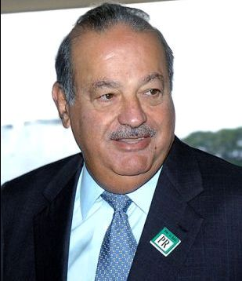
- Net Worth: $54.5
- Age: 77
- Source: telecom
- Mexico's richest man, Carlos Slim and his family control America Movil, Latin America's biggest mobile telecom firm.
- With foreign telecom partners, Slim bought a stake in Telmex, Mexico's only phone company, in 1990.
- He also owns stakes in Mexican construction, consumer goods, mining and real estate companies and 17% of The New York Times.
- His son-in-law Fernando Romero designed the Soumaya Museum in Mexico City, home to Slim's extensive, eclectic art collection.
7.Larry Ellison
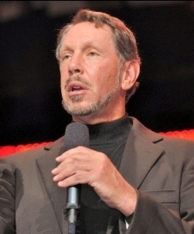
- Net Worth: 52.2 Billion
- Age: 72
- Source: Software
- Ellison cofounded software firm Oracle in 1977 to tap into the growing need for customerrelationship management databases.
- While he gave up the CEO role in 2014, Ellison is still involved at Oracle as chairman and chief technology officer.
- Ellison never finished college. He started out building databases for the CIA.
- In 2016 he pledged $200 million to the University of Southern California for a cancer treatment center .
8.Charles Koch
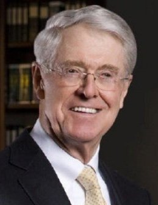
- Net Worth: $48.3 Billion
- Age: 81
- Source: Diversified
- Charles Koch has been chairman and CEO of Koch Industries, America's second largest private company, since 1967.
- The conglomerate has $100 billion in sales from pipelines, chemicals, Dixie cups, Brawny paper towels and Stainmaster carpets.
- His father, Fred Koch, started the business in 1940 and improved a method of refining heavy oil into gasoline.
- The Kansas native splits controlling interest of the firm with his brother, David; they bought out their siblings' shares in 1983.
9.David Koch
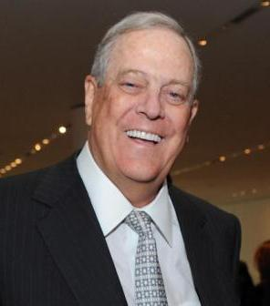
- Net Worth: $48.3 Billion
- Age: 77
- Source: Diversified
- Koch shares a majority stake in Koch Industries, U.S's second largest private firm, with his brother Charles.
- The Kansas native now lives in New York City, and oversees Koch's chemical technology group.
- A well-known philanthropist, he is a big donor to Lincoln Center and Memorial-Sloan Kettering Cancer Center.
- Koch ran as the Libertarian Party's vice presidential candidate in 1980.
10.Michael Bloomberg
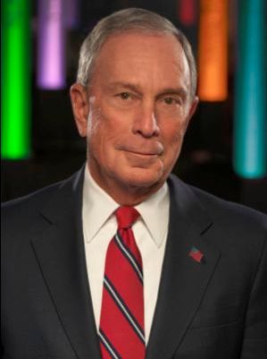
- Net Worth: $47.5 Billion
- Age: 77
- Source: Bloomberg LP
- Bloomberg cofounded financial information and media company Bloomberg LP in 1981.
- He retains an 88% stake in the business, which has revenue north of $9 billion.
- He has donated more than $4 billion to gun control, climate change and other causes.
- He got his start on Wall Street in 1966 with an entry level job at investment bank Salomon Brothers.
- They fired him 15 years later.
- He owns at least six homes, including ones in Bermuda and London.
11.Bernard Arnault
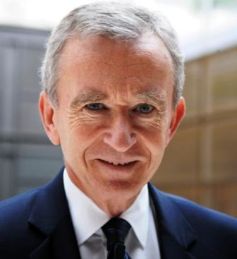
- Net Worth: $41.5 Billion
- Age: 68
- Source: LVMH
- One of the world's ultimate taste-makers, Bernard Arnault oversees an empire of 70 brands including Dom Perignon, Bulgari, Louis Vuitton, Sephora and Tag Heuer, as well as nearly 3,900 retail stores, all under the umbrella of luxury goods powerhouse LVMH.
- The company, where he has been CEO since 1989, had record sales of nearly $40 billion in fiscal year 2016. The bulk of his fortune is tied up in Christian Dior stock, through which Arnault holds a controlling interest in LVMH.
- He also has billions of dollars of stock in LVMH directly, in supermarket chain Carrefour and in Hermes.
- An arts patron and collector, he is the visionary behind the $135 million Frank Gehrydesigned Foundation Louis Vuitton museum in Paris' Bois de Boulogne, which opened in October 2014.
- LVMH is now working with the City of Paris to create another major new cultural institution that will be dedicated to artists and live performances.
12.Larry Page
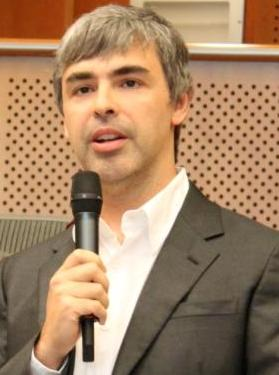
- Net Worth: $40.7 Billion
- Age: 44
- Source: Google
- Page serves as CEO of Alphabet, the parent company of Google.
- He cofounded Google in 1998 with fellow Stanford Ph.D. student Sergey Brin.
- Page is a clean energy advocate, and his Palo Alto houses use fuel cells and geothermal energy.
- Page is reportedly personally funding two secretive flying car startups: Zee.Aero and Kitty Hawk.
13.Sergey Brin
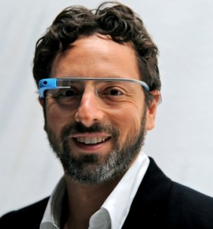
- Net Worth: $39.8 Billion
- Age: 43
- Source: Google
- Brin serves as president of Google parent company Alphabet.
- He previously ran the secretive Google X division, which made the ill-fated Google glasses.
- Brin cofounded Google with Larry Page in 1998 after they met at Stanford University.
- The richest immigrant in America, Brin has been an outspoken critic of Trump's immigration ban.
- Brin came to the U.S. from Russia when he was 6 in the wake of anti-Semitism against his family.
14.Liliane Walton
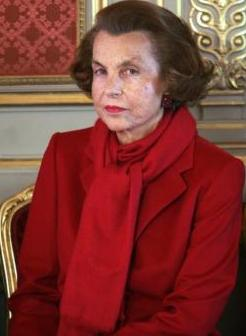
- Net Worth: $39.5 Billion
- Age: 94
- Source: L'Oreal
- The world's richest woman, Bettencourt owns 33% of makeup giant L'Oréal with her children.
- Her father, Eugene Schueller, founded the cosmetics empire in 1907.
- The elderly widow, who suffers from dementia, was replaced on L'Oréal's board by a grandson in 2012.
15.S.Robson Walton
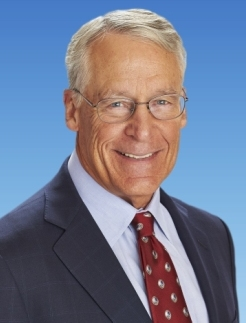
- Net Worth: $34.1 Billion
- Age: 72
- Source: Val-Mart
- Rob Walton is the eldest son of Wal-Mart founder Sam Walton.
- He ran the retailer for 23 years, taking over as chairman upon his father's death in 1992.
- He retired as chairman in June 2015 and was replaced by his son-in-law, Greg Penner.
- He still sits on the board of Wal-Mart.
- He and other heirs of Sam Walton collectively own more than half of Wal-Mart's stock.